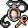

信仰の護符 Amulet of faith
英語版 CrawlWiki の記事「Amulet of faith」(0.33 向け、2025-10-19 版)の翻訳です。原文の著者は編集履歴をご覧ください。
この記事は 0.33 の時点の内容で、最新の 0.34 とは違うところがあるかもしれません。
| 種類 | 装身具 |
|---|---|
| 名前 | 信仰の護符 |
| アイコン |  |

| 神々の注意を着用者に向けさせるために作られた護符だ。神の注目を集めることで神を喜ばせやすくなるが、神はあなたの背信行為にもより目を光らせるようになる。この護符を外すと、神の歓心がいくらか失われる。 |
信仰の護符を身につけると、今信じている神(と、これまでに棄教した神々)があなたをより気にかけるようになり、信仰心が上がりやすくなる。
基本情報
- 信仰心の上がり方が 25% 速くなる。
- 贈り物をくれる神の場合: 贈り物のタイムアウトが 0 になったあと、贈り物を受け取る確率が 33% 上がる。
- 懺悔の最中に信仰の護符を着けていると(今は無信仰であっても)、神罰が下る頻度が 3 分の 1 増える。懺悔は早く終わるが、それは神の怒りの効果がより頻繁に起きるからだ。
護符を外すと、信仰心の 3 分の 1 を失う。
特殊なケース
- 次の神には、良くも悪くも効果がない。
- アシェンザリ - 呪いで自らを縛る信者にしか関心がない。この護符に有益な呪いを付けることはできるが、護符そのものの効果はない。
- ゴザーグ・イム・サゴーズ - ゴザーグが気にかけるのは金貨だけだ!
- イグニス - 残された炎はすでにすべて差し出している。
- 次の神には、別の形で影響する。
- 神々の末裔が信仰の護符を着けると、「あなたは自尊心が高まった気がした。」というメッセージが出る。ただし、実際の効果は何もない。
- ミイラはもともと生まれつき信仰の性質を持っているので、この護符を着けても追加の効果はない。
戦略
信仰の護符の価値は、神の信仰心をどれだけ活かせるかに尽きる。
ネメレクスのように強力な能力や贈り物を持つ神なら、当然その恩恵は大きい。そういう神を信じているなら、信仰の護符はほかの戦闘向けの護符と同じくらい、あるいはそれ以上に役に立つ。ただし、その能力を実際に使っていればの話だ。どれほど強力な能力でも、使わなければ助けにはならない。逆に、ヴェフメットのように常時発動の能力が中心の神では、この護符はあまり役に立たない。
信仰の護符を外すときに失う信仰心は怖く思えるかもしれないが、うまく付き合うことはできる。贈り物の数に限りがある神(ヴェフメットやルー)なら、贈り物を受け取り終えてから外せば損は最小限で済む。ウスカヤーなら、どのみち戦闘の外ではすぐに信仰心が下がるので、外したときの損は気にしなくていい。ほかの神でも、信仰心を失うのは完全に自分の意思で外したときだけで、致命的になることはめったにない。その一方で、長く着け続けたときの恩恵は計り知れない。
変更履歴
- 0.28 より前は、この護符を外しても信仰心が 15 未満に下がることはなかった。
- 0.18 より前は、信仰心へのボーナスは 25% ではなく 33% だった。
- 0.17 より前は、一部の神が危害から守ってくれる確率がこの護符で上がっていた(その判定では信仰心が 33% 高いものとして扱われた)。
| 装身具 | |
|---|---|
| 護符 | 軽業師 • 化学 • 散逸 • 信仰 • 守護霊 • 魔力再生 • 反射 • 再生 • 野生化 |
| 指輪 | 器用さ • 躱し身 • 飛行 • 知性 • 魔力 • 耐毒 • 生命力保護 • 護り • 耐冷 • 耐火 • 腐食阻止 • 霊視 • 殺戮 • 腕力 • 意志力 • 魔術 |